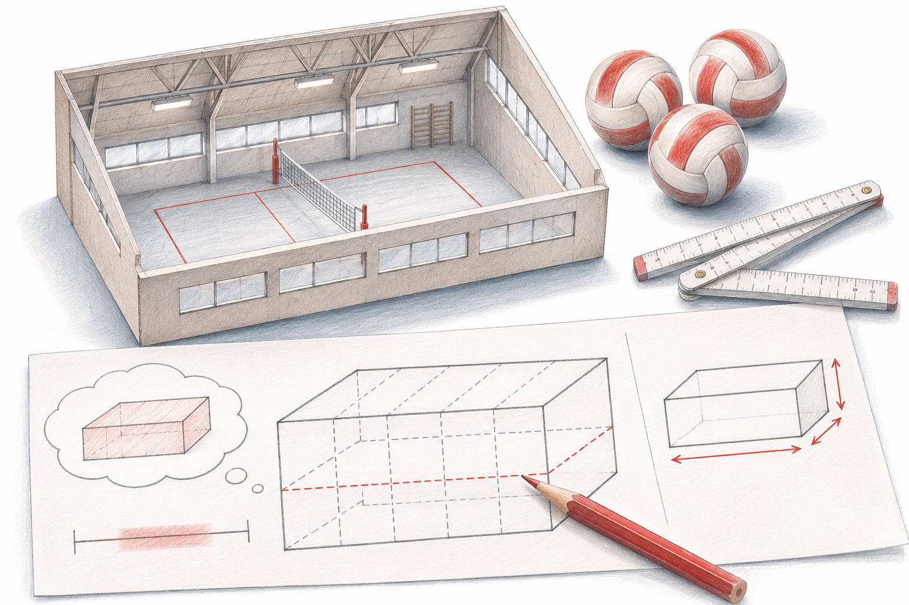

Eine Fermi-Schätzung wird durch ihre Annahmen interessant, nicht durch eine beeindruckend genaue Zahl.

Die fünf Fermi-Fragen (lokal überprüfbar)
Wie viele Volleybälle passen in unsere Turnhalle?
Wie viele Treppenstufen hat unser Schulhaus?
Wie viel Wasser verbraucht die Schule an einem Schultag?
Wie viele A4-Blätter verbraucht die Schule in einem Schuljahr?
Wie viele Fussballfelder gross ist unser Pausenareal?
Wichtig: Nimm Fragen, deren Antwort ihr am Ende wirklich nachprüfen könnt, also messen, zählen oder beim Hauswart nachfragen.
So schätzt die Klasse: zerlegen, annehmen, rechnen
Zerlegen: Die grosse Frage in kleine, beantwortbare Teilfragen aufteilen.
Annehmen: Jede Annahme mit ihrem Wert aufschreiben.
Rechnen: Nachvollziehbar rechnen und das Ergebnis als Spanne mit einem besten Wert angeben, zum Beispiel «zwischen 280’000 und 420’000, bester Wert 340’000».
Der Prompt, mit dem die KI ihre Annahmen offenlegt
Schätze, wie viele Volleybälle in unsere Turnhalle passen. Zerlege die Frage in Teilschritte und nenne jede Annahme mit dem verwendeten Wert. Rechne nachvollziehbar. Gib das Ergebnis als Spanne mit einem besten Wert an. Erkläre anschliessend, welche Annahme das Ergebnis am stärksten beeinflusst und welche lokalen Informationen dir fehlen.Die Frage im ersten Satz kannst du einfach austauschen.
Nach der Auflösung
Jede Gruppe vervollständigt den Satz: «Unser Ergebnis wäre besser geworden, wenn …» Wer die Abweichung untersucht, versteht das Modell hinter der Zahl.
Den ganzen Beitrag mit allen Ergebnissen findest du auf digitalespausenbrot.ch
Eine Fermi-Schätzung wird durch ihre Annahmen interessant, nicht durch eine beeindruckend genaue Zahl. Zwei vernünftige Modelle können abweichen. Der Vergleich zeigt, welche Annahme das Ergebnis verändert und welche lokale Information eine Messung wert wäre.
Zerlege eine lokale Frage in messbare Teile. Lass die Gruppen jede angenommene Zahl mit Einheit und Begründung notieren, bevor sie rechnen.
Vergleicht erst die Modelle, dann die Ergebnisse. Bei stark abweichenden Zahlen sucht ihr die Annahme mit dem grössten Einfluss.
Messt oder zählt gezielt eine dieser Grössen. Rechnet mit dem neuen Wert nach und beschreibt, warum die Spanne enger oder das Ergebnis anders wird.
Ausgearbeitetes Beispiel, kein Bericht aus einer konkreten Klasse.
Ausgangslage: Wie viele A4-Blätter verbraucht eine fiktive Klasse? Annahmen: 24 Lernende, 3 Blätter pro Tag, 180 Unterrichtstage.
Darauf kommt es an: Das Modell ergibt 12'960 Blätter. Bei 2 bis 4 Blättern pro Tag liegt die Spanne bei 8'640 bis 17'280. Die Anzahl bedruckter Seiten ist nicht automatisch die Anzahl Papierblätter.
Eine begründete Lösung: Die Gruppe zählt eine Stichprobenwoche und unterscheidet ein- und doppelseitige Kopien. Sie korrigiert ihre Tagesannahme und nennt Ferien sowie besondere Projektwochen als verbleibende Unsicherheit.
Unsere Frage: […]
Zerlegung mit Einheiten: […]
Kleine / mittlere / grosse Annahme: […]
Ergebnis als Spanne: […]
Wichtigste Unsicherheit: […]
Diese Grösse prüfen wir vor Ort: […]
Danach ändern wir […]Viele Nachkommastellen: Runde passend zur unsichersten Annahme. Eine genaue Multiplikation macht geschätzte Eingangswerte nicht genauer.
KI als Auflösung: Auch ihr Ergebnis beruht auf Annahmen. Die Auflösung kommt aus lokalen Informationen oder bleibt ausdrücklich eine Schätzung.
Übertrage das Modell auf eine andere Klasse oder Woche. Welche Faktoren bleiben gleich, welche müssen neu erhoben werden?
Woran du die Qualität erkennst: Die Gruppe kann erklären, wodurch ihre Spanne entsteht und welche zusätzliche Information sie am stärksten verbessern würde.
Eine Fermi-Schätzung wird durch ihr Modell nachvollziehbar. Die Zahl am Ende hängt von den gewählten Annahmen ab. Eine Spannweite zeigt, welche Unsicherheit im Modell steckt. Beim Vergleich mit einer KI werden deshalb Zerlegung, Einheiten und empfindliche Annahmen untersucht. Eine lokale Messung kann anschliessend genau die Annahme verbessern, die den grössten Einfluss hat.
Fiktive Frage zum Papierverbrauch. Für eine Schule werden 300 Lernende, 190 Schultage und durchschnittlich 2 bis 4 ausgegebene A4-Blätter pro Person und Tag angenommen. Büro- und Kopierfehler sind in diesem ersten Modell noch offen.
Gib Anzahl Personen und Schultage vor. Lass zunächst nur die tägliche Ausgabe schätzen und eine Rechnung erklären.
Vergleiche die Schätzung mit einem bereitgestellten Jahresverbrauch. Erkläre die Abweichung anhand konkreter Modellannahmen.
Vereinbare Kriterien für nachvollziehbare Annahmen, korrekte Einheiten und eine begründete Überarbeitung nach der Prüfung.
Lege die Modelle nebeneinander und suche die erste Annahme, in der sie auseinandergehen. Prüfe genau diese Stelle mit verfügbaren Informationen.